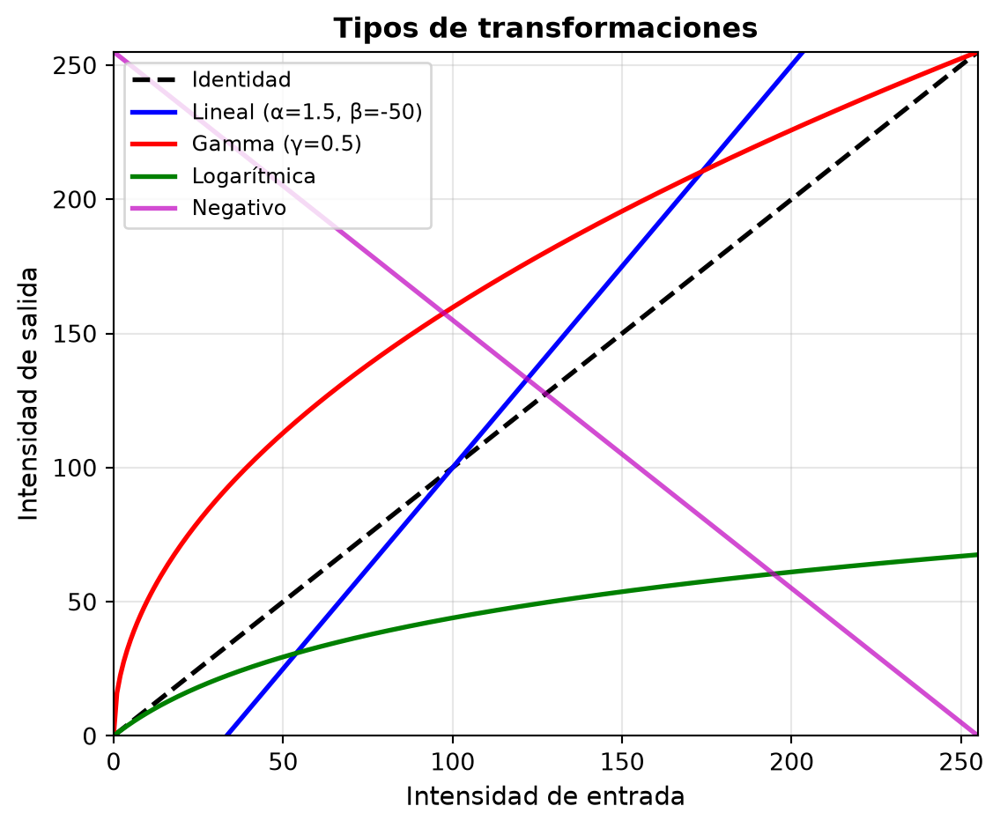
Unidad 2.2 – Transformaciones de Intensidad
Tratamiento Digital de Imágenes
1 Objetivos de aprendizaje
- Comprender las transformaciones de intensidad en imágenes digitales
- Aplicar ajustes lineales de brillo y contraste
- Utilizar transformaciones no lineales (corrección gamma)
- Reconocer cuándo usar cada tipo de transformación
2 ¿Qué son las transformaciones de intensidad?
- Operaciones que modifican el valor de cada píxel de forma independiente
- No dependen de los píxeles vecinos (a diferencia de los filtros espaciales)
- Fórmula general:
\[ g(x,y) = T[f(x,y)] \]
donde:
- \(f(x,y)\) = imagen de entrada
- \(g(x,y)\) = imagen de salida
- \(T\) = función de transformación
3 Tipos de transformaciones
Lineales:
- Cambio de brillo
- Ajuste de contraste
- Negativo de imagen
No lineales:
- Corrección gamma
- Transformaciones logarítmicas
- Ecualización de histograma
4 Transformación lineal
La forma más simple de ajustar brillo y contraste:
\[ g(x,y) = \alpha \cdot f(x,y) + \beta \]
donde:
- \(\alpha\) controla el contraste (ganancia)
- \(\alpha > 1\): aumenta contraste
- \(0 < \alpha < 1\): disminuye contraste
- \(\alpha > 1\): aumenta contraste
- \(\beta\) controla el brillo (offset)
- \(\beta > 0\): aumenta brillo
- \(\beta < 0\): disminuye brillo
- \(\beta > 0\): aumenta brillo
5 Ejemplo visual: ajuste de brillo
import cv2
import matplotlib.pyplot as plt
import numpy as np
# Cargar imagen en escala de grises
img = cv2.imread("imagenes/DPP0357.TIF", cv2.IMREAD_GRAYSCALE)
# Diferentes valores de brillo (beta)
brillo_oscuro = cv2.convertScaleAbs(img, alpha=1.0, beta=-50)
brillo_original = img
brillo_claro = cv2.convertScaleAbs(img, alpha=1.0, beta=50)
# Visualización
plt.figure(figsize=(12,4))
plt.subplot(1,3,1)
plt.imshow(brillo_oscuro, cmap='gray')
plt.title('β = -50 (más oscuro)')
plt.axis('off')
plt.subplot(1,3,2)
plt.imshow(brillo_original, cmap='gray')
plt.title('β = 0 (original)')
plt.axis('off')
plt.subplot(1,3,3)
plt.imshow(brillo_claro, cmap='gray')
plt.title('β = +50 (más claro)')
plt.axis('off')
plt.tight_layout()
plt.show()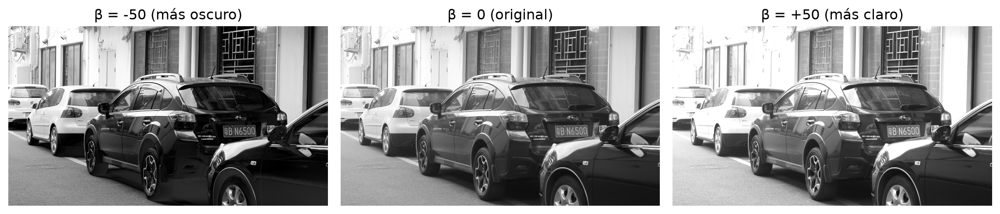
6 Ejemplo visual: ajuste de contraste
# Diferentes valores de contraste (alpha)
contraste_bajo = cv2.convertScaleAbs(img, alpha=0.5, beta=0)
contraste_original = img
contraste_alto = cv2.convertScaleAbs(img, alpha=1.5, beta=0)
# Visualización
plt.figure(figsize=(12,4))
plt.subplot(1,3,1)
plt.imshow(contraste_bajo, cmap='gray')
plt.title('α = 0.5 (bajo contraste)')
plt.axis('off')
plt.subplot(1,3,2)
plt.imshow(contraste_original, cmap='gray')
plt.title('α = 1.0 (original)')
plt.axis('off')
plt.subplot(1,3,3)
plt.imshow(contraste_alto, cmap='gray')
plt.title('α = 1.5 (alto contraste)')
plt.axis('off')
plt.tight_layout()
plt.show()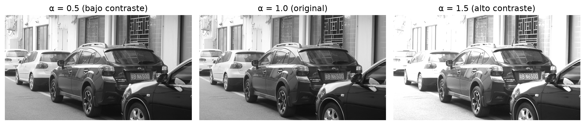
7 Efecto combinado: brillo + contraste
# Combinando alpha y beta
ajustada = cv2.convertScaleAbs(img, alpha=1.3, beta=30)
# Visualización con histogramas
fig, axes = plt.subplots(2, 2, figsize=(12,8))
axes[0,0].imshow(img, cmap='gray')
axes[0,0].set_title('Original')
axes[0,0].axis('off')
axes[0,1].imshow(ajustada, cmap='gray')
axes[0,1].set_title('Ajustada (α=1.3, β=30)')
axes[0,1].axis('off')
axes[1,0].hist(img.ravel(), bins=256, color='gray', alpha=0.7)
axes[1,0].set_title('Histograma original')
axes[1,0].set_xlim([0,256])
axes[1,1].hist(ajustada.ravel(), bins=256, color='blue', alpha=0.7)
axes[1,1].set_title('Histograma ajustado')
axes[1,1].set_xlim([0,256])
plt.tight_layout()
plt.show()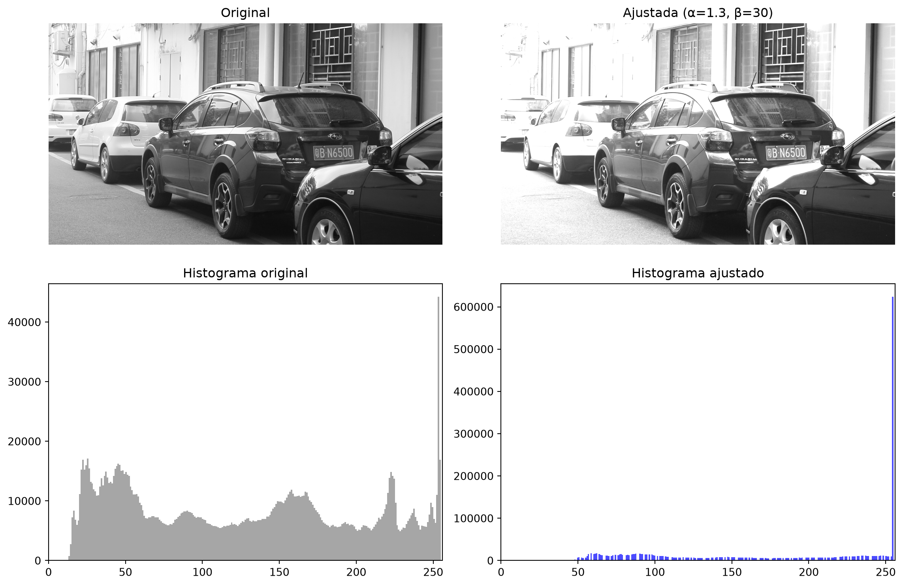
8 Limitaciones del ajuste lineal
Problema:
- El ajuste lineal afecta uniformemente toda la imagen
- Puede saturar (valores >255 o <0)
- No diferencia entre tonos claros y oscuros
Solución:
- Transformaciones no lineales
- Ajustan diferentes rangos de intensidad de forma diferente
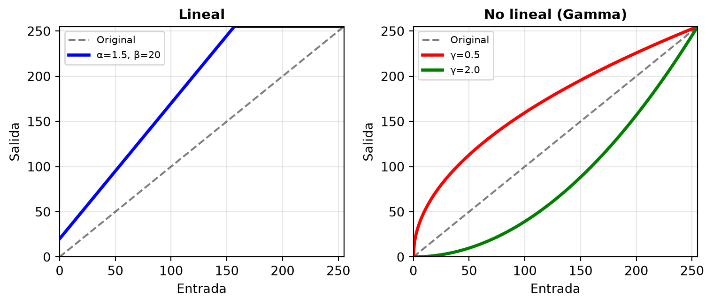
9 Corrección gamma
Transformación no lineal más común:
\[ g(x,y) = c \cdot [f(x,y)]^\gamma \]
donde:
- \(c\) es una constante de normalización (usualmente \(c=1\))
- \(\gamma\) (gamma) controla la curvatura de la transformación
Normalización en práctica: \[ g(x,y) = 255 \cdot \left(\frac{f(x,y)}{255}\right)^\gamma \]
10 Efecto del valor de gamma
\(\gamma < 1\) (por ejemplo, 0.5):
- Aclara la imagen
- Expande los tonos oscuros
- Comprime los tonos claros
- Útil para imágenes subexpuestas
\(\gamma > 1\) (por ejemplo, 2.0):
- Oscurece la imagen
- Comprime los tonos oscuros
- Expande los tonos claros
- Útil para imágenes sobreexpuestas
\(\gamma = 1\):
- Sin cambio (lineal)
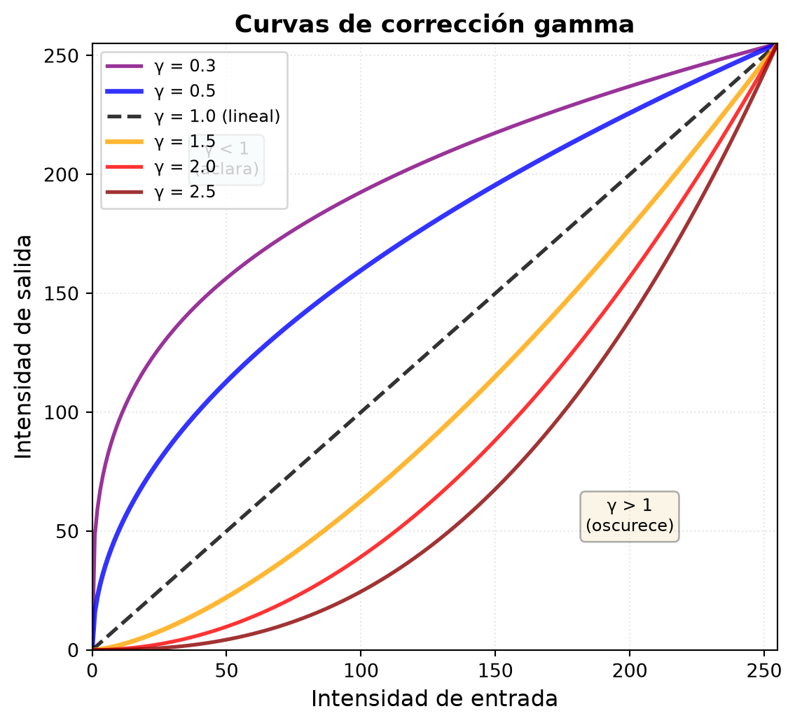
11 Ejemplo: corrección gamma
# Función para aplicar corrección gamma
def ajustar_gamma(imagen, gamma=1.0):
# Crear tabla de búsqueda (LUT)
tabla = np.array([((i / 255.0) ** gamma) * 255
for i in range(256)]).astype("uint8")
# Aplicar la tabla
return cv2.LUT(imagen, tabla)
# Aplicar diferentes valores de gamma
gamma_05 = ajustar_gamma(img, gamma=0.5)
gamma_10 = img # Original
gamma_20 = ajustar_gamma(img, gamma=2.0)
# Visualización
plt.figure(figsize=(12,4))
plt.subplot(1,3,1)
plt.imshow(gamma_05, cmap='gray')
plt.title('γ = 0.5 (más claro)')
plt.axis('off')
plt.subplot(1,3,2)
plt.imshow(gamma_10, cmap='gray')
plt.title('γ = 1.0 (original)')
plt.axis('off')
plt.subplot(1,3,3)
plt.imshow(gamma_20, cmap='gray')
plt.title('γ = 2.0 (más oscuro)')
plt.axis('off')
plt.tight_layout()
plt.show()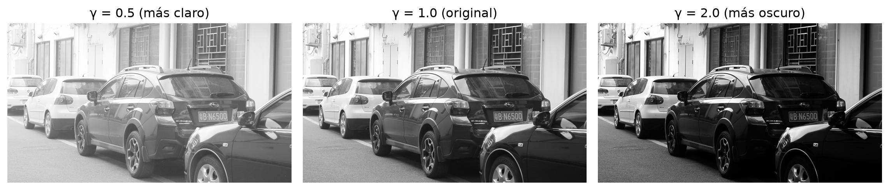
12 Comparación: curvas de transformación
# Visualizar las curvas de transformación
x = np.linspace(0, 255, 256)
plt.figure(figsize=(10,6))
plt.plot(x, x, 'k--', label='γ = 1.0 (identidad)', linewidth=2)
plt.plot(x, 255 * (x/255)**0.5, 'b-', label='γ = 0.5', linewidth=2)
plt.plot(x, 255 * (x/255)**2.0, 'r-', label='γ = 2.0', linewidth=2)
plt.plot(x, 255 * (x/255)**0.3, 'g-', label='γ = 0.3', linewidth=2, alpha=0.6)
plt.xlabel('Intensidad de entrada', fontsize=12)
plt.ylabel('Intensidad de salida', fontsize=12)
plt.title('Curvas de corrección gamma', fontsize=14)
plt.legend(fontsize=10)
plt.grid(True, alpha=0.3)
plt.xlim([0, 255])
plt.ylim([0, 255])
plt.show()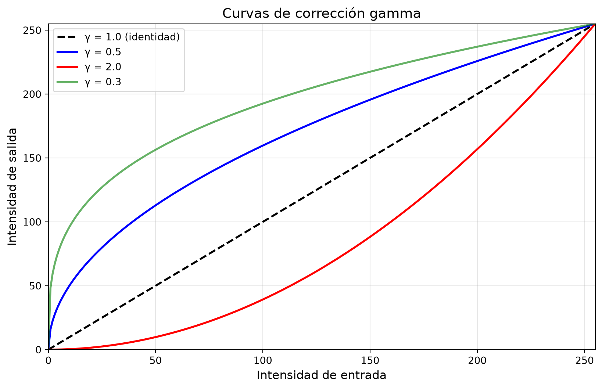
13 Otras transformaciones útiles
Negativo de imagen: \[ g(x,y) = 255 - f(x,y) \]
# Negativo
negativo = 255 - img
plt.figure(figsize=(10,4))
plt.subplot(1,2,1)
plt.imshow(img, cmap='gray')
plt.title('Original')
plt.axis('off')
plt.subplot(1,2,2)
plt.imshow(negativo, cmap='gray')
plt.title('Negativo')
plt.axis('off')
plt.tight_layout()
plt.show()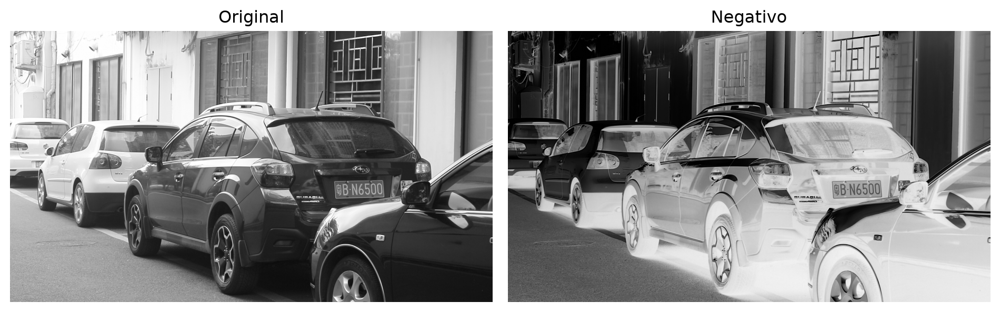
14 Transformación logarítmica
Útil para expandir valores oscuros y comprimir valores claros:
\[ g(x,y) = c \cdot \log(1 + f(x,y)) \]
# Transformación logarítmica
# Normalizar a [0,1], aplicar log, y escalar a [0,255]
img_normalizada = img.astype(np.float32) / 255.0
log_transformado = np.log1p(img_normalizada) # log1p es log(1+x)
# Normalizar resultado a [0,255]
log_transformado = (log_transformado / log_transformado.max()) * 255
log_transformado = np.uint8(log_transformado)
plt.figure(figsize=(10,4))
plt.subplot(1,2,1)
plt.imshow(img, cmap='gray')
plt.title('Original')
plt.axis('off')
plt.subplot(1,2,2)
plt.imshow(log_transformado, cmap='gray')
plt.title('Transformación logarítmica')
plt.axis('off')
plt.tight_layout()
plt.show()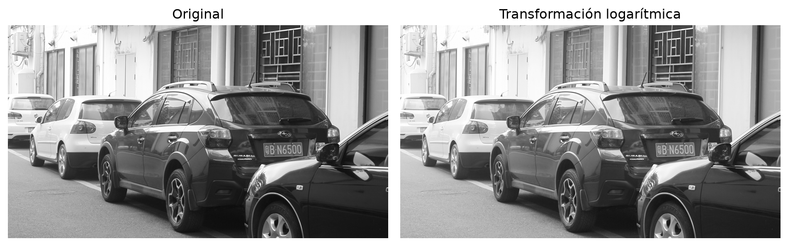
15 ¿Cuándo usar cada transformación?
| Transformación | Cuándo usar | Ejemplo de aplicación |
|---|---|---|
| Ajuste lineal | Correcciones simples de brillo/contraste | Imagen ligeramente oscura |
| Gamma < 1 | Imágenes subexpuestas (muy oscuras) | Fotografía nocturna |
| Gamma > 1 | Imágenes sobreexpuestas (muy claras) | Imagen con flash excesivo |
| Logarítmica | Realzar detalles en zonas oscuras | Imágenes con alto rango dinámico |
| Negativo | Visualizar detalles oscuros | Radiografías médicas |
| Ecualización | Distribución desigual de intensidades | Mejorar contraste global |
16 Resumen comparativo
# Crear una imagen de comparación
fig, axes = plt.subplots(2, 3, figsize=(15,8))
axes[0,0].imshow(img, cmap='gray')
axes[0,0].set_title('Original', fontsize=12)
axes[0,0].axis('off')
axes[0,1].imshow(cv2.convertScaleAbs(img, alpha=1.3, beta=30), cmap='gray')
axes[0,1].set_title('Ajuste lineal (α=1.3, β=30)', fontsize=12)
axes[0,1].axis('off')
axes[0,2].imshow(ajustar_gamma(img, 0.5), cmap='gray')
axes[0,2].set_title('Gamma = 0.5', fontsize=12)
axes[0,2].axis('off')
axes[1,0].imshow(ajustar_gamma(img, 2.0), cmap='gray')
axes[1,0].set_title('Gamma = 2.0', fontsize=12)
axes[1,0].axis('off')
axes[1,1].imshow(log_transformado, cmap='gray')
axes[1,1].set_title('Logarítmica', fontsize=12)
axes[1,1].axis('off')
axes[1,2].imshow(cv2.equalizeHist(img), cmap='gray')
axes[1,2].set_title('Ecualización', fontsize=12)
axes[1,2].axis('off')
plt.tight_layout()
plt.show()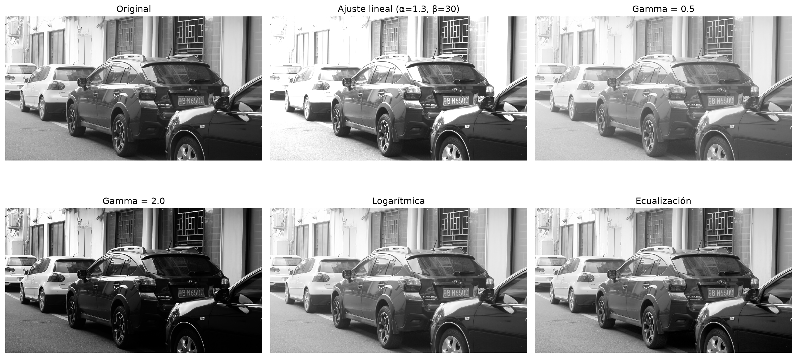
17 Conclusiones
- Las transformaciones de intensidad modifican cada píxel de forma independiente
- El ajuste lineal (\(\alpha f + \beta\)) es simple pero puede saturar valores
- La corrección gamma es no lineal y más flexible
- \(\gamma < 1\): aclara (útil para imágenes oscuras)
- \(\gamma > 1\): oscurece (útil para imágenes claras)
- \(\gamma < 1\): aclara (útil para imágenes oscuras)
- Elegir la transformación adecuada según el histograma y la aplicación
18 Aprende más
- Gonzalez, R. C., & Woods, R. E. (2018). Digital Image Processing. Capítulo 3.
- OpenCV Documentation: Image Transformations
- Cambridge in Colour: Gamma Correction